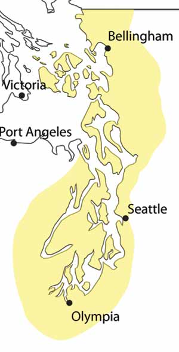

« Outer Coast Puget Sound Str. of Juan de Fuca »
San Juan Islands
Includes the San Juans, Bellingham Bay, the Skagit Flats, Mt Baker, etc.
Central Sound
Seattle, Elliot Bay, Bainbridge & Whidbey Islands, the I-90 Corridor, etc.
Hood Canal & Kitsap
North Kitsap, Hoodsport, Port Ludlow, Dabob Bay, Eastern Olympic Mountains, etc.
South Sound
Vashon Island, Olympia, Mt. Rainier, etc.